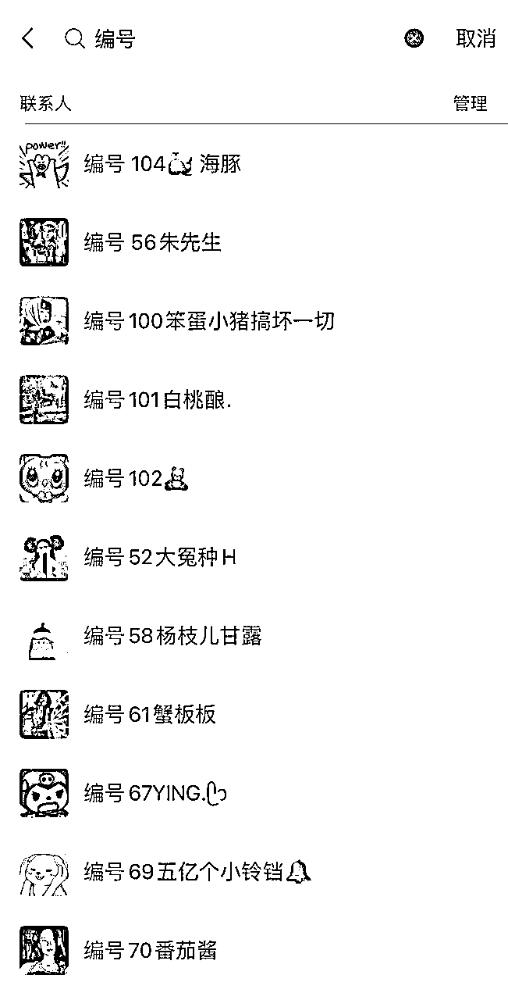

来源：https://vub1ul9ufi.feishu.cn/docx/GT0Fd48pNoO0TCxLL24caZgunkb
Hello，大家好呀，我是谢不言，一个95后矩阵流量操盘手，目前在济南
上一次和大家分享，还是在去年关于青年夜校的项目打法，据说上次的精华帖帮助参与项目的朋友赚到5-50万不等
这次给大家分享的文章不是关于赚钱的，而是关于如何省钱的
上次在航海家群里面聊天，和大佬们聊到了降本增效，我说自己在用线上兼职打粉，同样的工作内容和产出，成本是线下全职员工的1/2，吸引了不少航海家围观，说要让我详细的聊一聊线上兼职的玩法
以我所在的二线城市济南举例，线下全职新媒体剪辑的月薪在4000元+社保1500元，按照每月22个工作日算，日薪是250元，人均剪辑一条30秒-3分钟的作品，大概需要20-40分钟，人均一天大约能剪辑10-15条，一条视频的制作成本约在20-35元之间
这里的成本不包括工位费、社保费、电脑折旧费以及管理成本等等隐性成本
而我所招的线上视频剪辑兼职，同样的作品，同样的质量制作一条内容只需要5~10元
而且没有任何隐性成本，也不必担心剪辑时间问题，反正按条计费
月薪4000元的新媒体全职员工，每天大概能精细化运营5~8个小红书账号，每个账号发布1-3条笔记，每天大概能产生精准流量在30~60个
如果换成线上流量团队，运营一组账号，只需要线上月薪1000元的新媒体员工+月薪1000元的私信回复客服
而且还可以按周结算，同样每天产出的精准流量比线下员工只多不少
而且我不用解决手机问题，账号问题，实名问题以及后续的封号问题，省去了一大堆消耗人的麻烦
我只需要解决找人的问题就可以啦~
众所周知，中国是个劳动密集型的国家，14亿人口还缺一点会剪辑人吗？
如果缺，是因为你的方法没有用对，或许是你没有读到我这篇文章
百度百科给的答案是：降低成本、增加效益
如果只有一个人，千万不要所有事情都自己做，记住你只需要做20%不可替代的工作，甚至更少
其余的80%的重复性、机械性工作都分包出去，比如让兼职制作笔记，制作视频，剪辑视频
比如让兼职去发布笔记，回复私信评论，维护社群等等，都可以对外分包
中小型公司最适合用线上兼职去扩大流量来源，提高项目收入。
当一个项目跑通之后，红利期往往是短暂的，这时不应该自己吭哧吭哧的去弄账号，去弄笔记发布内容，而是充分利用身边资源，或者用线上人力杠杆去快速的放大占领市场
一个公司百人以上，肯定有一些冗余的业务需要精炼，也会有一些冗余的人员需要精简
如果一家公司，新媒体流量人员、运营客服人员超过10人的，老板此刻要反省一下了，任何事情都要求真务实。
如果你下定决心为企业降本增效，那应该这篇文章也会给你带来很多的启发
亲身实践，通过线上兼职制作视频和做图，同样的内容质量，对比线下员工来说，可以节省一半的成本
一旦流量渠道内容形式跑通之后，想要扩大流量来源，千万不要在自己傻乎乎的做账号了
最快的方式就是让线上的兼职去帮你代发笔记，你来回收精准客资
什么是租号代发？就是租甲的账号，然后去找乙制作内容并在电脑端发布，若有私信评论，让甲在手机上回复引流
这个应该不需要我多说吧，线上小助理，社群运营等等都属于这类不需要高强度脑力的文职性的工作，都可以让兼职来干
如何根据你的行业测出能有流量的爆款模板，这个是内容制作的关键，如果你不知道自己行业如何引流，也可以找我咨询，咱们这里就以我公司的测出来的小国爆款模板举例
首先把一篇爆款笔记按照结构拆分，分为封面、内容页，标题、正文
封面又由多个要素组成，比如主标题，副标题、封面底色、封面图案，接下来把爆款因素的变与不变固定下来，比如内容底色不变、风格不变、让兼职只改变需要变动的某一要素，比如标题
以爆款视频为例，也需要我们按照镜头结构，脚本结构，去拆分成多个画面组成，让兼职去完成拼图作业
简单类的视频只需要给兼职看样板视频，然后提供素材，让他们根据自己创意比葫芦画瓢剪辑
复杂一点的视频，你可以按照视频内容结构拆分、分类排列，然后让兼职按照要求，重新拼装组合
比如画面一，画面二，画面三，分别对应视频的前5秒，前10秒，前15秒，然后我们提供素材一，素材二，素材三，让他们按类型连线
新媒体文案分为标题类和正文类，标题类有主谓宾结构内容公式，这个之前的文章有提到过，你可以翻看一下
正文类也可以按照开头、中间、结尾去进行分类切割，只需要按照给出框架和规则，让兼职逐一完善就可以，就像命题作文一样
大家身边总会有一些老板，专门以引流兼职粉和出售兼职粉为生，这种兼职粉市场价大概在4~8元/个
如果你没有这类渠道，可以找我来帮你介绍
大学生的资源是性价比最高的，我自己也经常用，之前给大家推荐加学生qq群
现在规则监管比较严格，已经搜不到q群了，但我们可以直接找大学校园里面做兼职的同学，让他们去帮我们介绍大学生，而且还会节省我们的时间
如果想自己体验招聘兼职整个流程，先进百度贴吧xx大学——QQ群——扫码进群——询问，加好友
基本上每个学校贴吧都有对应的群，不知道如何找兼职的大佬，想节省时间，可以找我对接已培训成熟的兼职
Boss引流兼职粉比较粗暴，直接有效，但是也容易违规封号
首发发布兼职信息之前，要多发布几个正常岗位，建议直接发布客服类、剪辑类或者运营类岗位
具体引流效率需要看你的岗位JD，当然你也可以复制我的
这个boss打粉没有技术含量，只要发布就有人主动咨询
当有人和你沟通了解兼职信息时，不要一上来就直接互换微信，而是要主动去输入几行字了解下情况，先要简历再发微信，这样可能可以极大程度地避免直接要微信带来的封号问题
无论以哪种形式引流兼职粉到微信，都要避免在私域端违规封号的问题
因为兼职这个词意味着很大的风险性，腾讯会着重的封控关注这类词
所以当你一个微信频繁的出现这类词语时，稍微一个不注意，可能就是个7天，限制社交场景或者永久封号
那我们应该如何避免呢？
首先我们引流兼职粉可以让他们先进微信群，在微信群内筛选过后，在引导他加你的微信，而不是直接什么人都加到微信，在不熟悉的情况下，这样有很大的安全隐患
以兼职类视频剪辑培训为例
第1步我会让客户加承接端的微信，然后自动通过自动发送话术，引导他们填写基础类信息，最后让他们加微信群
这一波会筛选掉1/3的僵尸粉、围观粉
等人数凑齐之后，或者4日晚上8点，我会统一在群内文字版讲解，或者腾讯会议介绍一般分为几类内容，我们通常是先介绍第一公司是干什么的，公司如何靠谱，兼职内容是什么，兼职内容怎么做，兼职能赚多少钱
【大群筛选，小群留人】
初次兼职培训，一般会以建立信任基础，讲解兼职内容为主，讲解完之后，会让他们再次微信确认继续做兼职
基础的兼职信息了解后，我们会建立线上兼职协同文档，定好内容制作要求，然后上传样板，让兼职先比着葫芦画瓢，制作之后在规定时间内统一表格回传，根据内容制作水平，筛掉执行力差和基础能力不过关的人
第一天一般会让他们剪辑5条视频，看一下大家的真实水平，以及看下兼职之间的差距，最后把质量垫底的人砍掉
【成品视频】
【5元的视频，干到50+万播放，精准引流上百人】
经过三次筛选，能留下来的兼职，基本上就是有时间、有技能的靠谱选手了，这类人只要你一直有订单，他们就能一直跟你干下去
一个兼职的流量专供给一个销售，然后每天复盘数据
每个兼职对应一个编号，让兼职引流时夹在话术里，让加过来的流量备注上

在兼职发完微信时，让对方回复一句，“加了，已加”等字眼截图，然后在做统计
关于激励兼职就两件事：
兼职质量大于数量，稳定压倒一切
需要激励的都是钱没给到位，得加钱
写到最后，在经济下行的背景，省钱就是赚钱，希望看到最后的老板都能有所启发~
我是谢不言，知无不言，言无不尽，有需要兼职提高工作效率的大佬们
可以给你安排已经培训好的兼职，欢迎链接 okk296（备注生财圈友）~